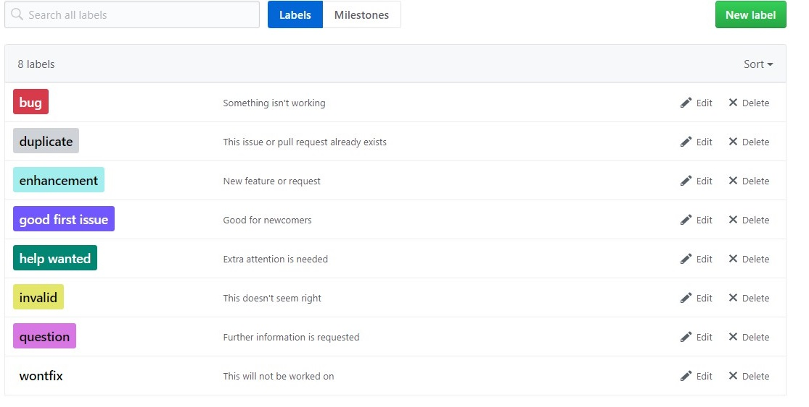

その名の通りIssueにラベルを付けて分類できます。Issues一覧からラベル一覧を確認できますが、デフォルトでもbugやduplicate(重複したIssueなど、結構な数のラベルが揃っています。
まずはデフォルトのラベルで運用してみて、足りないようであれば追加していくのがいいでしょう。ラベルは1つのIssueに複数つけることができます。 任意の色で表示できるので、一覧画面での視認性が増しますね。もちろんラベルでフィルタリングすることも出来ます。
以上でIssueの活用方法は終わりです。どのツールを使う時も同じですが、まずはゆるやかに始めてみて、徐々にチームに合った形に運用方法を固めていくといいでしょう。